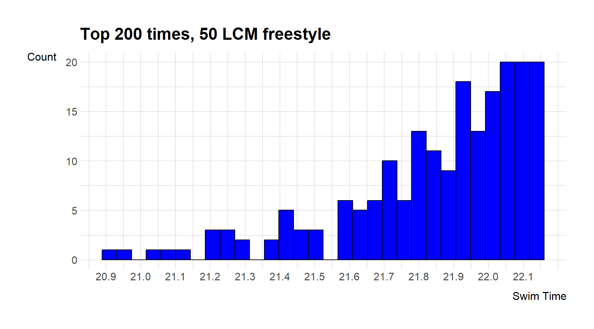

swimming <- read_csv("Swimming Data.csv")DANL Project
Taking a look at the fastest swimming times
1 Introduction
About this project
This page will give you an overview and good idea of the distribution of top swim times and show you just how impressive the world record and top times really are.
2 Data
The data set swimming contains a list of the all time top 200 times in the world. This list is filtered to the 50LCM (long course meters) freestyle and only one time per person. The data set also contains other useful information about the swim, such as the name, year, country, and meet name. The data is filtered to contain only best times for a swimmer, meaning no repeated names on the list.
2.1 Summary Statistics
skim(swimming)| Name | swimming |
| Number of rows | 200 |
| Number of columns | 16 |
| _______________________ | |
| Column type frequency: | |
| character | 10 |
| logical | 2 |
| numeric | 4 |
| ________________________ | |
| Group variables | None |
Variable type: character
| skim_variable | n_missing | complete_rate | min | max | empty | n_unique | whitespace |
|---|---|---|---|---|---|---|---|
| meet_name | 0 | 1 | 7 | 61 | 0 | 109 | 0 |
| swim_date | 0 | 1 | 8 | 10 | 0 | 130 | 0 |
| full_desc | 0 | 1 | 25 | 25 | 0 | 1 | 0 |
| team_code | 0 | 1 | 3 | 3 | 0 | 49 | 0 |
| team_short_name | 0 | 1 | 4 | 26 | 0 | 49 | 0 |
| full_name_computed | 0 | 1 | 9 | 29 | 0 | 200 | 0 |
| gender | 0 | 1 | 1 | 1 | 0 | 1 | 0 |
| birth_date | 0 | 1 | 8 | 10 | 0 | 198 | 0 |
| meet_city | 1 | 1 | 4 | 14 | 0 | 72 | 0 |
| country_code | 0 | 1 | 3 | 3 | 0 | 35 | 0 |
Variable type: logical
| skim_variable | n_missing | complete_rate | mean | count |
|---|---|---|---|---|
| event_id | 200 | 0 | NaN | : |
| standard_name | 200 | 0 | NaN | : |
Variable type: numeric
| skim_variable | n_missing | complete_rate | mean | sd | p0 | p25 | p50 | p75 | p100 | hist |
|---|---|---|---|---|---|---|---|---|---|---|
| swim_time | 0 | 1.00 | 21.85 | 0.27 | 20.91 | 21.72 | 21.92 | 22.05 | 22.14 | |
| RANK | 0 | 1.00 | 98.91 | 56.98 | 1.00 | 49.00 | 100.00 | 146.50 | 198.00 | |
| Rank_Order | 0 | 1.00 | 100.50 | 57.88 | 1.00 | 50.75 | 100.50 | 150.25 | 200.00 | |
| fina_points | 30 | 0.85 | 875.89 | 33.73 | 842.00 | 852.00 | 868.00 | 888.50 | 1029.00 |
3 Overview of the top times
The following histogram shows the frequency of the top times in the world. You can see that the frequency decreases fast as the time gets closer to the world record of 20.9
ggplot(data = swimming) +
geom_histogram(aes(x = swim_time, fill = swim_time), color = "black", fill = "blue", bins = 30) +
scale_x_continuous(breaks = seq(20.90, max(swimming$swim_time), by = 0.1)) +
ggtitle("Top 200 times, 50 LCM freestyle") +
xlab("Swim Time") +
ylab("Count")
4 Country frequency
This is a list and bar graph that shows the countries with the most swimmers on the top 200 list
p2 <- swimming %>%
count(team_short_name) %>%
arrange(-n) %>%
head(10)
p2# A tibble: 10 2
team_short_name n
<chr> <int>
1 United States of America 41
2 Russian Federation 15
3 Australia 14
4 Brazil 10
5 Italy 10
6 France 8
7 Japan 8
8 Great Britain 7
9 Hungary 6
10 Netherlands 6p3 <- swimming %>%
filter( team_code %in% c("USA", "RUS", "AUS", "BRA", "ITA", "FRA", "JPN", "GBR", "HUN", "NED"))
ggplot(data = p3, aes(y = team_short_name)) +
geom_bar(fill = "lightblue", color = "black") +
ggtitle("Bar Plot of Team Frequencies") +
xlab("Country") +
ylab("Frequency")5 Age of top times
This section will show you the distribution of age
library(lubridate)
library(dplyr)
swimming <- swimming %>%
mutate(
birth_date = dmy(birth_date),
age = floor(year(Sys.Date()) - year(birth_date)),
swim_date = dmy(swim_date),
meet_age = floor(year(Sys.Date()) - year(swim_date)),
age_at_time_of_swim = age - meet_age
)skim(swimming$age_at_time_of_swim)| Name | swimming$age_at_time_of_s |
| Number of rows | 200 |
| Number of columns | 1 |
| _______________________ | |
| Column type frequency: | |
| numeric | 1 |
| ________________________ | |
| Group variables | None |
Variable type: numeric
| skim_variable | n_missing | complete_rate | mean | sd | p0 | p25 | p50 | p75 | p100 | hist |
|---|---|---|---|---|---|---|---|---|---|---|
| data | 0 | 1 | 23.65 | 3.15 | 17 | 21 | 23 | 26 | 35 |
It seems that the peak age of performance for the 50 freesetyle is 23 years old. The youngest swimmer is 17 years old and the oldest swimmer is 35 years old.
ggplot(data = swimming) +
geom_bar(aes(x = age_at_time_of_swim), color = "black", fill = "purple", bins = 30) +
ggtitle("Age distribution") +
xlab("Age") +
ylab("Count")This histogram shows that the age peaks at 23 and gradually declines to 30, after that there are very few swimmers on the list that old.
6 Location of top times
This section will show what countries the top performances were swum at
p5 <- swimming %>%
count(country_code) %>%
arrange(-n) %>%
head(10)
p2# A tibble: 10 2
team_short_name n
<chr> <int>
1 United States of America 41
2 Russian Federation 15
3 Australia 14
4 Brazil 10
5 Italy 10
6 France 8
7 Japan 8
8 Great Britain 7
9 Hungary 6
10 Netherlands 6This table displays which countries have the most top performances
ggplot(data = swimming, aes(x = country_code)) +
geom_bar(fill = "lightblue", color = "black") +
ggtitle("Bar Plot of Team Frequencies") +
xlab("Country") +
ylab("Frequency") +
theme(strip.text = element_text(size = rel(1)),
axis.text.x = element_text(angle = 45,
size = rel(1)))This bar chart displays all countries top 200 swims have been in, USA being significantly more than the rest
7 Conclusion
The analysis of the top 200 swimming times in the 50LCM freestyle reveals valuable insights into the competitive landscape of this particular swimming event. By examining the distribution of times and identifying trends we can gain a comprehensive understanding of the current performance standards and potential areas for improvement. This data-driven approach not only aids in benchmarking individual performances but also contributes to the broader understanding of the sport, assisting in the development of strategic training and competition strategies.